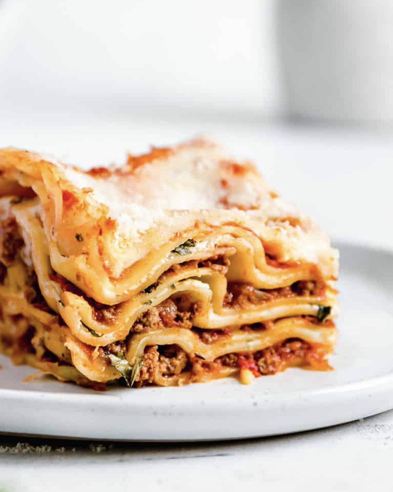

Lasagna
- Preheat oven to 180°C/350°F.
- Use a 33 x 22 x 7 cm / 13 x 9 x 2.5″ baking dish.
- Smear a bit of Ragu on the base, then cover with lasagna sheets. Tear sheets to fit.
- Spread over 2 1/2 cups of Ragu (enough to cover sheets), then drizzle over 1 cup of Cheese Sauce.
- Top with lasagna sheets (Note 7). Spread with another 2 1/2 cups of Ragu, then 1 cup of Cheese Sauce. Top with lasagna sheets then repeat 1 more time.
- Top with a 4th layer of lasagna sheets, then pour over the remaining Cheese Sauce.
- Sprinkle with Mozzarella, then bake for 25 minutes or until golden and bubbling.
- Stand for 5 to 10 minutes before cutting and serving, garnished with basil or parsley if desired.
- Enjoy!
